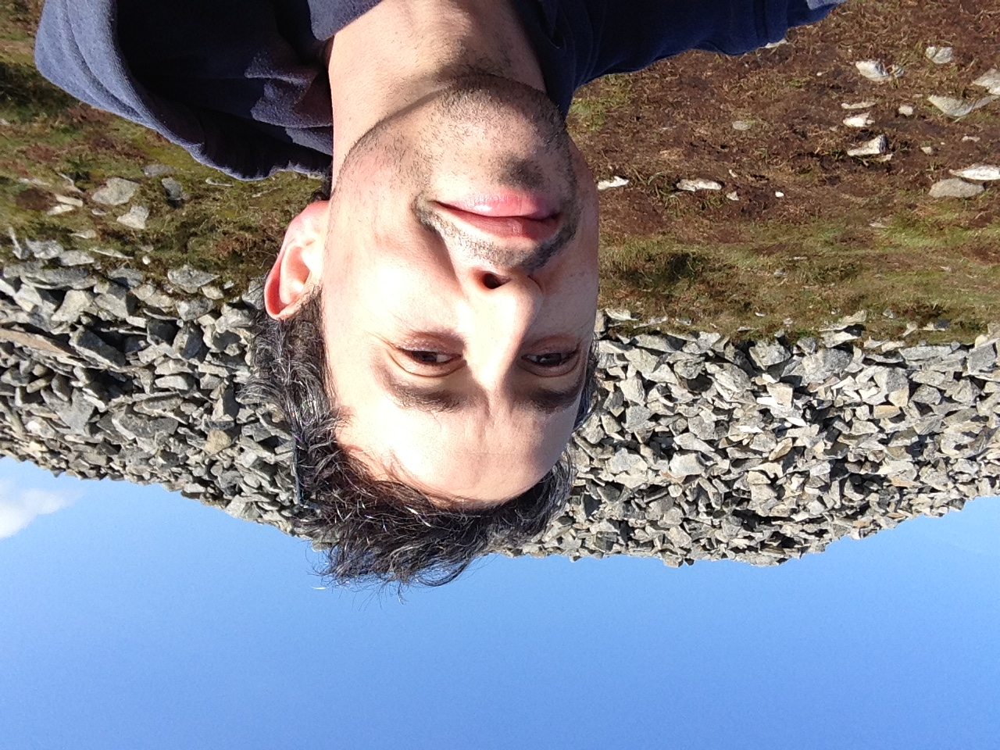

 Hey, I'm Brian Greene, a Northern Irish audio programmer, musician, and music producer living in Berlin. At Queen's Univeristy, Belfast, I studied Music Technology (BSc) and went on to complete my post graduate studies in further education (PGCFE) at Ulster University. I have worked as a lecturer and programme coordinator for 12 years in music production and sound engineering undergraduate courses with positions at the Southern Regional College, Armagh, and at Catalyst (Institute for Creative Arts and Technology), Berlin. My music career covers over 20 years of experiences as an engineer, musician and producer of various works. Currently, I am a freelance audio programmer (Olumay dsp) creating audio effect and instrument plug-ins with JUCE for artists, producers, engineers and musicians.